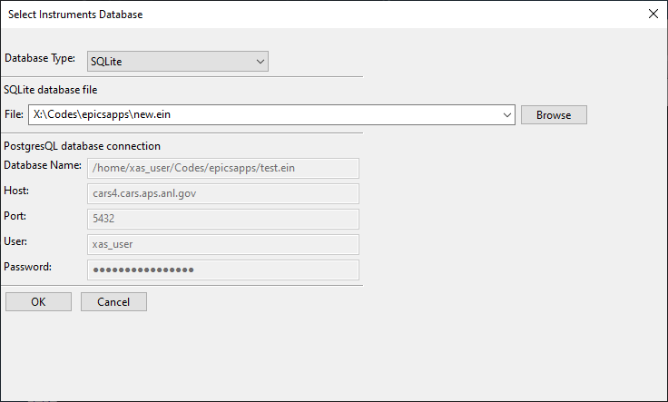

Using Epics Instruments¶
Epics Instruments is a GUI application (using wxPython) that lets any user:
- Organize PVs into Instruments: a named collection of PVs
- Manage Instruments with modern Notebook-tab interface.
- Save Positions for any Instrument by name.
- Restore Positions for any Instrument by name.
- Remember Settings for all definitions into a single file that can be loaded later.
- Multiple Users can be using multiple instrument files at any one time.
It was originally written to replace and organize the multitude of similar MEDM screens that appear at many workstations using Epics.
Dependencies, Installation¶
This application needs pyepics, numpy, wxPython, and SQLAlchemy (available at http://www.sqlalchemy.org/).
To install, use:
python setup.py install
from the Instruments folder. A windows installer may be available.
Getting Started¶
To run Epics Instruments, use:
python pyepics_instruments.py
or click on the icon.
A small window to select an Epics Instrument File, like this
If this is your first time using the application, choose a name, and hit return to start a new Instrument File. The next time you run Epics Instruments, it should remember which files you've recently used, and present you with a drop-down list of Instrument Files. Since all the definitions, positions, and settings are saved in a single file, restoring this file will recall the earlier session of instrument definitions and saved positions.
An Epics Instrument is a collection of PVs. Each Instrument will also have a collection of Positions, which are just the locations of all the PVs in the instrument at the time the Position was saved. Like a PV, each Instrument and each Position for an Instrument has a unique name.
Defining a New Instrument¶
To define a new Instrument, select Create New Instrument from the Instruments Menu. A screen will appear in which you can name the instrument and the PVs that belong to the Instrument.
If you add a few PVs and click OK, the PVs will connect, and you will see a screen something like this

Editing an Exisiting Instrument¶

The Instrument File¶
All the information for definitions of your Instruments and their Positions are saved in a single file -- the Instruments file, with a default extension of '.ein' (Epics INstruments). You can use many different Instrument Files for different domains of use.
The Instrument File is an SQLite database file, and can be browsed and manipulated with external tools. Of course, this can be a very efficient way of corrupting the data, so do this with caution. A further note of caution is to avoid having a single Instrument file open by multiple applications -- this can also cause corruption. The Instrument files can be moved around and copied without problems.